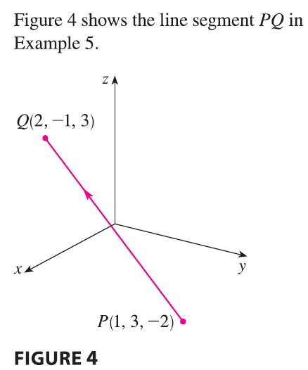
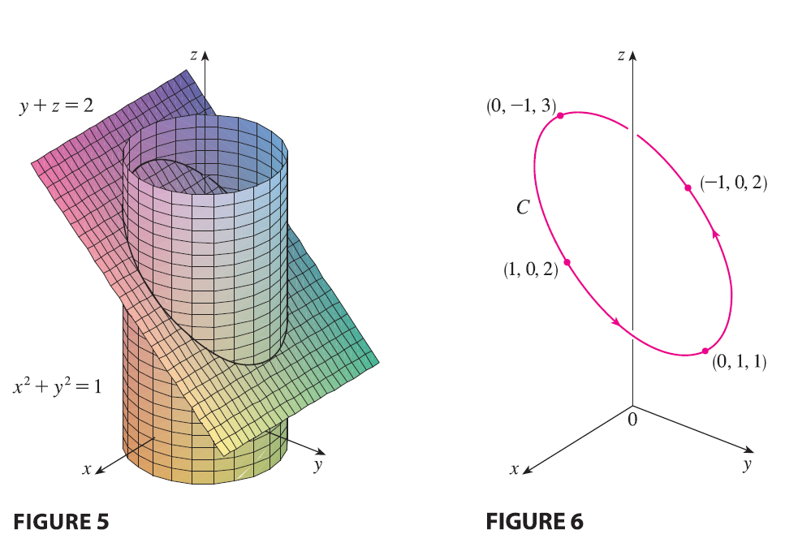

In Examples 3 and 4 we were given vector equations of curves and
asked for a geometric description or sketch. In the next two examples we
are given a geometric description of a curve and are asked to find
parametric equations for the curve.
EXAMPLE 5 Find a vector equation and parametric
equations for the line segment that joins the point \(P(1, 3, -2)\) to the point \(Q(2, -1, 3)\).

SOLUTION In Section 12.5 we found a vector equation
for the line segment that joins the tip of the vector \(\mathbf{r}_0\) to the tip of the vector
\(\mathbf{r}_1\): \[ \mathbf{r}(t) = (1-t)\mathbf{r}_0 +
t\mathbf{r}_1 \qquad 0 \le t \le 1 \] (See Equation 12.5.4.) Here
we take \(\mathbf{r}_0 = \langle 1, 3, -2
\rangle\) and \(\mathbf{r}_1 = \langle
2, -1, 3 \rangle\) to obtain a vector equation of the line
segment from \(P\) to \(Q\): \[
\mathbf{r}(t) = (1-t)\langle 1, 3, -2 \rangle + t\langle 2, -1, 3
\rangle \qquad 0 \le t \le 1 \] or \[
\mathbf{r}(t) = \langle 1+t, 3-4t, -2+5t \rangle \qquad 0 \le t \le 1
\] The corresponding parametric equations are \[ x = 1+t \qquad y = 3-4t \qquad z = -2+5t \qquad
0 \le t \le 1 \]
EXAMPLE 6 Find a vector function that represents the
curve of intersection of the cylinder \(x^2 +
y^2 = 1\) and the plane \(y+z=2\).
SOLUTION

Figure 5 shows how the plane and the cylinder intersect, and Figure 6
shows the curve of intersection \(C\),
which is an ellipse. The projection of \(C\) onto the xy-plane is the circle \(x^2 + y^2 = 1, z=0\). So we know from
Example 10.1.2 that we can write \[ x = \cos
t \qquad y = \sin t \qquad 0 \le t \le 2\pi \] From the equation
of the plane, we have \[ z = 2-y = 2 - \sin t
\] So we can write parametric equations for \(C\) as \[ x =
\cos t \qquad y = \sin t \qquad z = 2 - \sin t \qquad 0 \le t \le 2\pi
\] The corresponding vector equation is \[ \mathbf{r}(t) = \cos t \mathbf{i} + \sin t
\mathbf{j} + (2-\sin t)\mathbf{k} \qquad 0 \le t \le 2\pi \] This
equation is called a parametrization of the curve \(C\). The arrows in Figure 6 indicate the
direction in which \(C\) is traced as
the parameter \(t\) increases.